フォニックス動画 作成プロンプト（A〜J・2026-10-23 版）
目的: この指示で同じ動画を作り直せること。北浦先生の指示は原文のまま、使った画像も残しています（蜂谷さん依頼 10/16）。
1. 決まり（先生 OK 済み）
- 絵: A の基準の少年・黄色の無地・正面固定・ピクサー風。声G: 先生の録音 → ElevenLabs Liam seed7 → +4半音 → 最大 -1dB。
- 文字: Century Gothic Bold（名前＋小文字3つ、音で赤）。カードは merged PDF の該当ページ。
- 流れ: 名前2.0秒 → 音×3（3.0/5.5/8.0秒）→ 0.5秒。10秒・240コマ・1920×1080・AAC。
- キャラ: 拳に半透明0.6、手の動きで約0.7秒かけて0。口にかけない。修正版は毎回新スレッドで告知。
2. 手順
- 先生の静止画（始め・音の時）の左右を「子ども」と「画面」の両方で書く。
- 始めと終わりの絵を nano-banana で作る（画面の向きで指示、終わりは動く手だけ変える）。
- H3 で動き（手を開かない・まばたきなし・頭と服を動かさない）。指示文の全文は各文字の末尾。
- 顔は1コマに固定、手は H3 の手の範囲だけ、口は口元の楕円だけ貼る。元のコマを1枚ずつ使う。
- 口と手の1コマごとの変化を数値で、残像・二重線を原寸で確かめる。
3. くり返さない注意
- 残像: コマを混ぜる・補間する・口を貼ったり外したりすると出る（A v7・B v11・D v9）。
- 二重: 頭が下がる分の位置合わせ不足、貼る範囲が鼻や顎線をまたぐ（B v9・v14、D v2）。
- 手: H3 は手が開く・親指が伸びる・服が伸びる → 元の絵や親指消し、体のずれ戻し（B v13・D v9）。
- 胴・固定の腕が動く: H3 から広く貼ると胴やグーの輪郭まで揺れる → 動く腕の肌だけを貼り、グーと固定の腕は止めた絵（E v6〜v8）。
- 止まる場面との境目: 止めた絵と合成の絵を1コマで切り替えると跳ぶ → 数コマかけて切り替える（E v10・v11）。
- 腕の角度: nano-banana は腕の姿勢を変えにくい → 手で切り貼りした下絵を作り、「大きさを保って清書」させる（E v2〜v5）。
- 直すほど悪くなる: 同じ所を何版も直すと先生の目には悪化に見える → 同じ不具合が2版続いたら方式を相談（E v11〜v13 → v10 に戻した）。
- 口の切り替え: 笑顔の口と別の絵の口を混ぜると二重線や急な変化になる → 口だけ動く H3 を作るか、口角を少しずつ下げる中間の形を作る（F v3〜v6）。最後は E の口の素材を流用して解決（F v8）。
- 声の高さを変える加工: WORLD はロボット感、PSOLA はざらつきが出る → 速さを保って高さだけ変える asetrate だけを使い、明るさは EQ で足す（G v3〜v6）。
- 声の基準: 声は全て A の声（/æ/ 180Hz）にそろえる（先生 10/20）。声質は全アルファベット完成後に必要なら直す（先生 10/21）。
- 声の作り方: 毎回「基準音声 → Liam seed7 → 半音上げ」の同じ作り方にする。別の録音や別の声で作ると、発音が不明瞭・ロボット的になる（I v3〜v5、J v3c）。+4半音でロボット感が出る時は +3半音を試す（J v4c）。
- 息の音: /h/ などの息は声G に変えると「シュッ」になる → 先生の録音の息をそのまま使う。名前の z が消えたら録音のこすれる音を戻す（H v2・v5）。
- 切り貼りの限界: 止めた絵＋指だけ切り貼りは、境目で手が途切れ背景が乱れる → H3 を「始め=終わり」の同じ絵で作り直し、1本をそのまま使う（I v6〜v8）。
- 腕を前へ出す動き: 正面のカメラでは「前へ振り下ろす」「真っすぐ下ろす」を生成で出せなかった（H v8・v10 試作）→ K など前へ手を出す文字は、本番前に小さく試作して見せる。
- 手の形の読み取り: 画像の自動読み取りは手の甲／手のひらを取り違える。thumbs-up と解釈されやすい → 先生の言葉を正とし、終わりの絵を先に先生へ見せて OK を取ってから H3 を作る（J v4・v5 試作）。
A — Annie Apple /æ/
いまの版: 現行候補: v2cg2 の映像＋声G（採用の明言はまだ）
作り方: ~/pros-kyozai/drafts/2026-10-01_a-motion-trial/work/compose_v2cg2.py 録音: 引継ぎ zip の audio/01/A_Annie_Apple.mp3 → 声G


| 日時 | 北浦先生の指示（原文） | 直したこと |
|---|---|---|
| 07/10 15:42 | ①1 ②今回のAの口は大きすぎるので前の版との間ぐらいの口の大きさで ③2 ④1 | v4: ピクサー風でそろえる。口を v3 と前の版の中間に（蜂谷さん 17:51「手のひらが180°返っている」→手の向きも修正） |
| 07/10 20:39 | お願いします。 一つ確認なのですが、『 ③二階建ての a』というのは上の方という認識で合っていますか？ フォントを『century gothic』でお願いします。 | a は二階建て・Century Gothic |
| 09/10 15:51 📎 | /æ/ の口の形が前の版より小さくなっています。 添付画像の口の大きさにしてください。 | v5: 口を添付画像の大きさに（縦÷顔幅 約0.25） |
| 09/10 18:37 | 口の大きさはそれでいいのですが、閉じた状態から開く動きがなんか変です。 | v6〜v7: 口だけをゆっくり開く。コマを混ぜない（蜂谷さん 10/11「残像」） |
| 13/10 14:52 | v2で右側下の"a"のフォントを『Century Gothic』で作ってください。 この形が一番いい気がします。 | v2cg: v2 の映像のまま、右下の a だけ Century Gothic Bold |
| 13/10 15:02 | 名前「Annie Apple」の字も Century Gothic にしてください。 | v2cg2: 名前も Century Gothic Bold |
| 13/10 18:31 | 動画はこれで良いと思います。 声質が暗いのが気になるのですが、音声を変えて何パターンか作れますか？できればもっと元気な明るい子どもの声のような感じが良いです。 | 声 A〜D（明るい子どもの声）を作成 |
| 13/10 19:01 | 先ほどの声質よりは良いのですが、動画の男の子の顔と合わない気がします。 もう少し少年のような声（低め）で何パターンかお願いします。 | 声 E〜H（少年の低めの声）を作成 |
| 13/10 19:34 | 声Gがいいと思いました。 これを一旦基準として覚えておいてください。 引き続きBの作成をお願いします。 再度動画や静止画を送る方が良いですか？ | 声G（Liam +4半音）を基準に決定 → B へ |
生成の指示文（全文）
始めの絵（fal-ai/nano-banana/edit・{"image_urls": ["(参照画像1)"], "num_images": 2, "aspect_ratio": "16:9", "output_format": "png"}）
Zoom out and complete this picture. The boy is standing upright, seen straight from the front at eye level. Extend his body naturally below the bottom edge of the inner picture: show his whole shirt, his brown belt and dark-blue jeans down to his mid-thighs, and his left arm hanging relaxed at his side. Keep his face, hair, eyes, right hand pose (in front of his chest, palm up, cupped, empty) and his light-blue shirt exactly as they are. Make his gentle smile perfectly symmetric, both mouth corners at the same height. Nothing around his neck. Fill the whole background with the same smooth plain warm yellow, no visible border or seams, no text. Sharp 3D animated feature-film render.
音の時の絵（fal-ai/nano-banana/edit・{"image_urls": ["(参照画像1)", "(参照画像2)"], "num_images": 2, "aspect_ratio": "16:9", "output_format": "png"}）
Image 1 is the picture to keep: the same standing boy, same face, hair, eyes, light-blue shirt, belt and jeans, the same plain warm yellow background, the same frontal eye-level camera and exactly the same framing and position in the frame. Change only two things, following the boy in image 2: (1) his right hand is raised to his mouth: the hand is cupped just below his lower lip with the fingers curled under his chin and the thumb pointing up beside the corner of his mouth, the hand does NOT cover his lips; (2) his mouth is wide open as when saying the short vowel 'a' in 'apple': jaw dropped, lips spread evenly to both sides, perfectly symmetric with both mouth corners at exactly the same height, upper teeth visible, tongue resting low, a happy open expression. Eyes open, looking into the camera. Left arm unchanged. Do not copy image 2's high camera angle, its orange background or its red necklace: nothing around his neck. The hand is empty. No text.
動き H3（minimax/h3-max-turbo/image-to-video・{"image_url": "(アップロードした画像/音声のURL)", "end_image_url": "(アップロードした画像/音声のURL)", "duration": 5, "resolution": "768P", "prompt_expansion_mode": "disabled", "seed": 101}）
A standing 3D animated cartoon boy in front of a plain warm yellow background. He smoothly raises his right hand from in front of his chest up to just below his mouth, and as the hand arrives he opens his mouth wide as if saying the short vowel 'a' in 'apple', mouth open evenly on both sides. The camera is fixed straight in front of him at eye level: no camera movement, no zoom, no cut. He keeps standing still; only his right arm and his mouth move. No other people, no objects, no text.
声G（voice-changer）（fal-ai/elevenlabs/voice-changer・{"audio_url": "(アップロードした画像/音声のURL)", "voice": "Liam", "remove_background_noise": false, "seed": 7, "output_format": "pcm_44100"}）
B — Betty Broccoli /b/
いまの版: 最終版 v14（10/14）
作り方: ~/pros-kyozai/drafts/2026-10-14_b-v14/work/compose_b14.py 録音: 引継ぎ zip の audio/02/B_Betty_Broccoli.mp3 → 声G


| 日時 | 北浦先生の指示（原文） | 直したこと |
|---|---|---|
| 06/10 10:51 | 親指について：親指を上でグーに握って両手をくっつけ、親指は両方とも立てない | 親指は立てずに握る |
| 13/10 19:51 | 動かすのは「子ども自身の左手（画面では右側の手）」で合っています。 | U2 確定: 動かすのは画面右の手 |
| 13/10 20:17 | ・Betty Broccoliのイラストが大きすぎます。Annie Appleと同じぐらいにしてください。 ・音声や文字はこれで問題ありません。 ・手の向きが違います。曲げている小指が下、親指が上になるように向きを変えてください。 ・口：閉じている状態からいきなりすぼめた形にするのではなく、aの時の様になめらかにつなげてください。 | v3: Betty 幅 150→100px、拳を縦に、口を段階的に |
| 13/10 20:54 📎 | ・口の形や動きは良くなりましたが、カクカクしているのでなめらかにしてください。 ・手の形ですが、まだ違うので添付の画像で手の向きを確認して作ってみてください。 | v4: 写真の向きで描き直し、コマを1枚ずつ使う |
| 13/10 21:49 📎 | ・口の動きは良くなりました。 ・手のサイズが大きくなりましたか？おかしいので戻してください。 ・手の形は、少年の右手の形で親指をもう少し倒してください。左手も右手と対象で同じ形にしてください。 ・手の動きがまだ違います。添付画像のように横に開く感じです。 | v5: 手の大きさを戻し、拳が外へ開く |
| 14/10 13:32 | ・口の動きをもう少しなめらかにしてください。 ・手の向きがまだ違います。体の前で手のひらを合わせ、それをそのままグーの形にする感じです。わかりますかね？ ・あと、左手を横に倒す時と"b"の発音がそろうようにしてください。 | v6: 手のひらを合わせたグーの絵、倒し終わりの次のコマで /b/ |
| 14/10 14:53 | ・まだ手の向きが違います。 ・今の向きでそのまま親指以外の４本の指と手のひらの付け根をくっつける感じです。（90°回転） | v7: 合掌の絵 → 握る H3 → そのコマを始めの絵に |
| 14/10 15:29 | ・手の向きがだいぶ良くなりました。もう少し手のひらの付け根を近づける（脇をしめる）感じでお願いします。 ・左手の動きが違います。下に開くのではなく、上に開く感じです。（握っている４本の指が上向きになる感じ） ・口の動きが少しぎこちないのでなめらかにしてください。 | v8: 拳を上へ返す H3。口元を常に貼る |
| 14/10 15:55 | ・手の動きは良くなりました。 ・口の動きは良くなりましたが、鼻が二重になるなど、もう少し改善が必要ですね。 | v9: 口の貼り範囲を鼻の下（y≥230）から |
| 14/10 16:05 | ・鼻と口元良くなりました。 ・ブロッコリーのイラストが手を隠しているので、"a"の時の様に左手が動くときに合わせて透明になるようにできますか？ | v10: 手が動くと Betty を 0.6→ほぼ0 |
| 14/10 16:13 | ・v9ではBettyで見えていなかったのですが、左手が動いたとき、曲げている指が残っている（残像）ので消してください。 ・Bettyの薄くなる速さは良いですが、完全には消えずうっすら残っているのが気になります。 | v11: 手の貼り範囲を広げ、Betty を完全に 0 |
| 14/10 16:27 | ・両拳のあいだと Betty の消え方は良くなりました。 ・右手の親指が異様に長いように見えるので自然な長さにしてください。 | v12: 親指を縦に縮める |
| 14/10 20:11 | ・まだ右手親指が変な感じがします。 ・左手を動かす時に右手の親指が見えないようにしてみて欲しいです。 | v13: 左手を動かす間、親指を消す |
| 14/10 20:13 | あと脇をしめる件について、変になりそうなのでやっぱり修正しなくていいです。 | 脇をしめる件は取り下げ |
| 14/10 20:35 | ・親指を見えなくしてもらい、良くなりました。 ・顎～頬のあたりが二重になっているように見えます。修正お願いいたします。 | v14: 口の貼り範囲を楕円にして顎線をまたがない |
| 14/10 20:48 | とても良くなりました。 とりあえずこのv14が最終版としておいてください。 次は"c"の作成をお願いします。 素材はありますか？ | B 最終版 = v14 |
生成の指示文（全文）
手のひらを合わせたグーの始めの絵（fal-ai/nano-banana-pro/edit・{"image_urls": ["(参照画像1)"], "num_images": 2, "aspect_ratio": "16:9", "output_format": "png", "resolution": "1K"}）
Edit image 1. Keep the boy, his face, eyes, eyebrows, closed smiling mouth, hair, clothes, the yellow background, the camera, the framing and the small size of his hands exactly the same. Change only the pose of his two hands: he first pressed his two palms flat together in front of his chest (like a clap or prayer, fingers pointing up), and then curled the fingers of both hands into fists while keeping the hands pressed together. So now the two fists face each other and press together at the centre of his chest: the curled fingers of each fist touch the curled fingers of the other fist, the back of each hand faces outward (left hand's back toward the right edge of the picture, right hand's back toward the left edge), both thumbs are on the top of the fists side by side, both little fingers are at the bottom, forearms come up from below. The two fists are mirror images (left-right symmetric), same size, same height. Exactly two hands, five fingers each. No text.
合掌→握る H3（f105 を始めの絵に）（minimax/h3-max-turbo/image-to-video・{"image_url": "(アップロードした画像/音声のURL)", "duration": 5, "resolution": "768P", "prompt_expansion_mode": "disabled", "seed": 707}）
A standing 3D animated cartoon boy in front of a plain warm yellow background, his palms pressed together in front of his chest like praying. Slowly and steadily he curls the four fingers of both hands down into fists while keeping the heels of his palms pressed together, so the two fists end up pressed against each other palm side to palm side, backs of the hands facing left and right, thumbs on top side by side, little fingers at the bottom. The hands lower slightly to chest height. His face stays still, mouth closed, he does not blink. Fixed camera, no zoom, no cut. No objects, no props, no text.
手を倒す H3（minimax/h3-max-turbo/image-to-video・{"image_url": "(アップロードした画像/音声のURL)", "end_image_url": "(アップロードした画像/音声のURL)", "duration": 5, "resolution": "768P", "prompt_expansion_mode": "disabled", "seed": 404}）
A standing 3D animated cartoon boy in front of a plain warm yellow background, two small fists pressed together in front of his chest. In one slow, steady, continuous motion his left fist (on the right side of the picture) tips over sideways to the right, rolling at the wrist like a door opening, while his other fist stays perfectly still. His mouth stays closed. Constant speed, no pauses. He does not blink, eyebrows stay still. Only the boy and the plain yellow background. Fixed camera, no zoom, no cut. No objects, no props, no text.
口だけ動く H3（minimax/h3-max-turbo/image-to-video・{"image_url": "(アップロードした画像/音声のURL)", "end_image_url": "(アップロードした画像/音声のURL)", "duration": 5, "resolution": "768P", "prompt_expansion_mode": "disabled", "seed": 505}）
A standing 3D animated cartoon boy in front of a plain warm yellow background holds his two fists perfectly still. Only his lips move: very slowly and smoothly, his closed lips gently push forward and round into a small round 'o' opening, at a constant gentle speed, then hold. The mouth never opens wide and no teeth show. He does not blink, eyebrows stay still. Hands, arms, head and body do not move. Fixed camera, no zoom, no cut. No objects, no text.
拳を上へ返す H3（minimax/h3-max-turbo/image-to-video・{"image_url": "(アップロードした画像/音声のURL)", "end_image_url": "(アップロードした画像/音声のURL)", "duration": 5, "resolution": "768P", "prompt_expansion_mode": "disabled", "seed": 838}）
A standing 3D animated cartoon boy in front of a plain warm yellow background, two small fists pressed together in front of his chest. In one slow, steady, continuous motion only his left fist (on the right side of the picture) turns over at the wrist and opens upward like a book cover, so that its curled four fingers end up facing up. It stays a closed fist right next to the other fist. His other fist, elbows and forearms stay still. His mouth stays closed, he does not blink. Fixed camera, no zoom, no cut. No objects, no text.
C — Cary Cucumber /k/
いまの版: 最終版 v9（10/15）。一式 lab/final-abc/C/
作り方: ~/pros-kyozai/drafts/2026-10-15_c-v9/work/compose_c9.py 録音: 引継ぎ zip の audio/03/C_Cary_Cucumber.mp3 → 声G


| 日時 | 北浦先生の指示（原文） | 直したこと |
|---|---|---|
| 15/10 15:23 | ・/k/ は腕を動かすタイミングで発音するようにしてください。 ・右手のグーを下ろす際、胸の中央ではなく、右胸前あたりに下ろすようにしてください。 | v2: 下ろす途中で /k/、終わりの絵を右胸前に |
| 15/10 18:05 | ・グーを下ろす先の位置はこれで良いです。 ・グーを下ろす動きをもっと速くできますか？イメージは右手にきゅうりを持っていて、それをかじって腕を下ろす感じです。 | v3: 1.0秒→0.5秒 |
| 15/10 18:15 | ・腕を下ろす速さ、良いです。 ・はじめ、口元にあるグーの手がぼやけています。修正お願いします。 | v4: 止まっている間は元の絵のグー |
| 15/10 18:26 | ・Caryに問題は無かったので戻して下さい。 ・恐らく口周りの部分が、グーの前に来ているためにグーが欠けてしまっているのかと思います。グーが上に来るように確認してください。 | v5: Cary を戻し、グーを口の上に重ねる |
| 15/10 18:38 | 良くなりましたが、口の右側部分が変です。 /k/ の時に動いていないようです。 | v6: 口は全面に貼り、グーだけ上に |
| 15/10 18:40 | もし口と手が重なって作りにくいようであれば、手をもう少し横（少年の右方向）にずらしても大丈夫です。 | （手を横にずらしても可） |
| 15/10 19:03 | 良くなりました。 すみません。Caryの位置を少しだけ下にずらしてもらいたいです。（右手の小指の曲がっているあたり） | v7: Cary を下へ |
| 15/10 19:15 | もう少し右下にずらしてもらいたいです。（Caryが口にかからないように） | v8: Cary を右下へ |
| 15/10 19:27 📎 | 添付画像の赤で描いた位置にできますか？ | v9: 赤印を動画の座標に換算（cx840 cy376） |
| 15/10 19:40 | とても良いです。一旦これを最終版として保存しておいてください。 | C 最終版 = v9 |
生成の指示文（全文）
始めの絵（fal-ai/nano-banana/edit・{"image_urls": ["(参照画像1)", "(参照画像2)"], "num_images": 2, "aspect_ratio": "16:9", "output_format": "png"}）
Image 1 is the picture to keep: the same standing boy, same face, hair, eyes, light-blue shirt, belt and jeans, the same plain warm yellow background, the same frontal eye-level camera and exactly the same framing, size and position in the frame. Change only his arms, hands and mouth, following the hand pose of the person in image 2: his RIGHT hand (on the LEFT side of the picture) is closed into a tight fist and raised beside his face, right next to his right cheek and jaw, at the height of his mouth, the curled fingers facing toward his mouth, the fist almost touching the side of his face but not covering the mouth. The right elbow is bent and points down and slightly out. His LEFT arm (on the right side of the picture) hangs relaxed at his side. The hands are empty. Mouth closed, lips gently together, relaxed, perfectly symmetric. Eyes looking into the camera. Do not copy image 2's person, clothes, camera angle, background or card. Nothing around his neck. No text, no watermark.
終わりの絵（右胸前）（fal-ai/nano-banana/edit・{"image_urls": ["(参照画像1)", "(参照画像2)"], "num_images": 2, "aspect_ratio": "16:9", "output_format": "png"}）
Image 1 is the picture to keep: the same standing boy, same face, hair, eyes, light-blue shirt, belt and jeans, the same plain warm yellow background, the same frontal eye-level camera and exactly the same framing, size and position in the frame. Change only his right arm, right hand and mouth, following the hand pose of the person in image 2: his RIGHT hand (on the LEFT side of the picture) is still a tight closed fist, but it has moved straight down from beside his face to the front of his RIGHT chest (the chest side on the LEFT of the picture, directly below where the fist started), in front of his right pectoral, NOT at the center of the chest, and the wrist is turned so the fist stands VERTICALLY: the thumb side on top, the little finger at the bottom, the curled fingers facing the camera. The right elbow is bent and close to his body. His LEFT arm (on the right side of the picture) still hangs relaxed at his side, unchanged. The hands are empty. His mouth is open a little, lips slightly apart in a relaxed small open shape as if saying 'k', perfectly symmetric. Eyes looking into the camera. Do not copy image 2's person, clothes, camera angle, background or card. Nothing around his neck. No text, no watermark.
口の H3（minimax/h3-max-turbo/image-to-video・{"image_url": "(アップロードした画像/音声のURL)", "end_image_url": "(アップロードした画像/音声のURL)", "duration": 5, "resolution": "768P", "prompt_expansion_mode": "disabled", "seed": 202}）
A standing 3D animated cartoon boy in front of a plain warm yellow background. He starts with his right fist (on the left side of the picture) held beside his cheek at mouth height. Slowly and smoothly, taking a full second, he moves that fist down to the center of his chest while turning the wrist so the fist stands upright, thumb on top. The fist stays tightly closed the whole time, never opening. Only at the very end his closed lips part slightly into a small relaxed opening, no teeth showing. His head and shoulders stay perfectly still; his eyes stay open and look at the camera, no blinking. His other arm stays relaxed at his side. The camera is fixed straight in front of him at eye level: no camera movement, no zoom, no cut. No other people, no objects, no text.
手を下ろす H3（minimax/h3-max-turbo/image-to-video・{"image_url": "(アップロードした画像/音声のURL)", "end_image_url": "(アップロードした画像/音声のURL)", "duration": 5, "resolution": "768P", "prompt_expansion_mode": "disabled", "seed": 202}）
A standing 3D animated cartoon boy in front of a plain warm yellow background. He starts with his right fist (on the left side of the picture) held beside his cheek at mouth height. Slowly and smoothly, taking a full second, he moves that fist straight down to the front of his right chest (same side, not toward the center), the fist stays closed. The fist stays tightly closed the whole time, never opening. Only at the very end his closed lips part slightly into a small relaxed opening, no teeth showing. His head and shoulders stay perfectly still; his eyes stay open and look at the camera, no blinking. His other arm stays relaxed at his side. The camera is fixed straight in front of him at eye level: no camera movement, no zoom, no cut. No other people, no objects, no text.
D — Duncan Donut /d/
いまの版: 最終版 v9（10/16 15:19）。一式 lab/final-abc/D/
作り方: ~/pros-kyozai/drafts/2026-10-15_d-v9/work/compose_d9.py 録音: 引継ぎ zip の audio/04/D_Duncan_Donut.mp3 → 声G


| 日時 | 北浦先生の指示（原文） | 直したこと |
|---|---|---|
| 15/10 19:47 📎 | 手の動きの初め(d_1)と/d/の時(d_2)の静止画を送りますので参考に作成してください。 | v1: d_1→d_2、拳が重なるコマで /d/ |
| 15/10 19:48 | a,bの時の様に出来たら新しいスレッドで知らせてください。 | 修正版は新しいスレッドで知らせる |
| 15/10 20:20 | ・鼻が二重になっているので修正してください。 ・口が動いていません。もし素材が無ければお渡しするのでお知らせください。 | v2: 位置合わせ ±24px、休みは閉じた口 |
| 15/10 20:22 | 毎回動画の修正が出来たら新しいスレッドに載せてください。 | （共通ルールに追加） |
| 15/10 20:36 | ・口の形ですが、もう少しすぼめてみてください。 ・手の動きは良いのですが、左手を下す時に、服が伸びてるように見えます。 ・Duncanは右手に重ねて、abcと同じく、初めは半透明、動きに合わせて透明にしてください。 | v3: 口の中央を横 0.7 倍、体の H3 を作り直し、Duncan を下の拳に |
| 15/10 21:07 📎 | ・口と服は一旦これで良いです。 ・Duncanのカップの部分が無いので修正してください。画像添付します。 | v4: 先生の原画（カップ付き）を切り抜いて使用 |
| 15/10 21:16 | ・Duncanが消える際、abcの様になめらかにしてください。今はいきなり消える感じになっています。 ・口の動きも出来ればもう少しなめらかにしてください。 | v5: Duncan は手の動きに合わせ約0.7秒で消す |
| 15/10 21:27 | ・Duncan の消え方はこれで良いです。 ・初めの口の形が変わってしまっているのでひとつ前に戻してください。後はこれで良いです。 | v6: 休みの口を v4 に戻す |
| 15/10 21:36 | ２段階目の口は必要なのですか？できれば１つ目と３つ目の形をスムーズにつないでほしいです。 | v7: 中間の口をやめ、直接つなぐ |
| 15/10 21:44 | 口の形の変わり目がまだなめらかではないですね。 | v8: 補間コマで等間隔に開く |
| 15/10 21:58 | ・まだ残像がありますね。 ・服が伸びる問題ももう少し改善できないでしょうか。 | v9: 補間をやめ元コマだけ（残像対策）。手と体の H3 を作り直し（服の伸び対策） |
| 16/10 15:19 📎 | 確認しました。 良いと思います！ とりあえずこちらを最終版として保存してください。 次は"e"をお願いします。静止画2種類（初め（e_1)と発音時の動き(e_2）)を添付しますので参考にしてください。 | D 最終版 = v9（一式 lab/final-abc/D/）→ E へ |
生成の指示文（全文）
始めの絵（fal-ai/nano-banana-pro/edit・{"image_urls": ["(参照画像1)", "(参照画像2)"], "num_images": 2, "aspect_ratio": "16:9", "resolution": "1K", "output_format": "png"}）
Image 1 is the picture to keep: the same standing boy, same face, hair, eyes, light-blue shirt, belt and jeans, same plain warm yellow background, same frontal eye-level camera, exactly the same framing, size and position. Change only his arms and hands. Image 2 is a teacher's photo showing the hand pose; copy the pose exactly as it appears in the picture, not mirrored. Do not copy the teacher, clothes, background or camera. All directions below are as seen in the picture. Both hands are tight closed fists in front of the center of his chest, backs of the hands toward the camera, elbows down near the body. LOWER fist: the arm coming from the LEFT edge of the picture; this fist lies horizontally in front of his lower chest, forearm level, knuckles pointing to the picture's right. UPPER fist: the arm coming from the RIGHT edge of the picture; this fist stands upright in front of his upper chest just below the collar, on the center line, about one fist-height ABOVE the lower fist with a clear gap between them. Mouth closed, relaxed neutral smile. No text, no watermark.
終わりの絵（fal-ai/nano-banana-pro/edit・{"image_urls": ["(参照画像1)", "(参照画像2)"], "num_images": 2, "aspect_ratio": "16:9", "resolution": "1K", "output_format": "png"}）
Image 1 is the picture to keep: the same boy, same pose, same framing, background, clothes and lower fist. Change only: the UPPER fist (whose arm comes from the RIGHT edge of the picture) moves straight DOWN until it sits directly on top of the LOWER fist (whose arm comes from the LEFT edge of the picture) and touches it, like the two hands gripping a baseball bat, as in image 2. The lower fist stays exactly where it is. Do not swap the arms: the arm from the picture's right stays on top. Both are tight closed fists, backs of hands toward the camera. His lips part slightly, small and symmetric, no teeth. No text, no watermark.
顔と口の H3（minimax/h3-max-turbo/image-to-video・{"image_url": "(アップロードした画像/音声のURL)", "end_image_url": "(アップロードした画像/音声のURL)", "duration": 5, "resolution": "768P", "prompt_expansion_mode": "disabled", "seed": 202}）
A standing 3D animated cartoon boy in front of a plain warm yellow background. He holds two closed fists in front of his chest: one fist lies horizontally low, the other is held upright about one fist-height above it. Smoothly, he moves the upper fist straight down until it rests on top of the lower fist, like gripping a baseball bat. The lower fist stays still. Both fists stay tightly closed the whole time, never opening. Only at the very end his lips part slightly into a small relaxed opening, no teeth showing. His head and shoulders stay perfectly still; his eyes stay open and look at the camera, no blinking. The camera is fixed straight in front of him at eye level: no camera movement, no zoom, no cut. No other people, no objects, no text.
手と体の H3（v9）（minimax/h3-max-turbo/image-to-video・{"image_url": "(アップロードした画像/音声のURL)", "end_image_url": "(アップロードした画像/音声のURL)", "duration": 5, "resolution": "768P", "prompt_expansion_mode": "disabled", "seed": 404}）
A standing 3D animated cartoon boy in front of a plain warm yellow background. He holds two closed fists in front of his chest: one fist lies horizontally low, the other is held upright about one fist-height above it. Slowly and smoothly, only his forearm lowers: the upper fist moves straight down until it rests on top of the lower fist, like gripping a baseball bat. The upper arm and elbow stay tucked at his side and do not move; only the forearm hinges at the elbow. The shirt is loose cotton that does not stretch at all: no fabric pulling, no stretching folds at the armpit, chest or pocket, the rolled sleeves keep their exact shape. The lower fist stays still. Both fists stay tightly closed, never opening. His head, face and shoulders stay perfectly still; eyes open looking at the camera, no blinking, mouth closed. The camera is fixed straight in front at eye level: no camera movement, no zoom, no cut. No other people, no objects, no text.
Duncan 単体（v3。v4 以降は先生の原画）（fal-ai/nano-banana/edit・{"image_urls": ["(参照画像1)"], "num_images": 2, "aspect_ratio": "3:4", "output_format": "png"}）
Image 1 is a phonics card. Draw ONLY the character Duncan Donut from this card (the twisted fried-dough donut character with a face), complete and whole, exactly the same character design, colours, black outlines and flat illustration style, but with NOTHING overlapping him: remove the black letter 'd', the chocolate bowl, and any card frame or text, and complete the parts that the letter 'd' and the bowl were covering so his whole body is fully drawn with continuous outlines. Centre him on a pure plain white background with generous empty margin on every side. No text, no shadow.
E — Emma Eggplant /e/
いまの版: 最終版 v10（10/19 11:43）。一式 lab/final-abc/E/
作り方: ~/pros-kyozai/drafts/2026-10-17_e-v10/work/compose_e10.py 録音: 引継ぎ zip の audio/05/E_Emma_Eggplant.mp3 → 声G

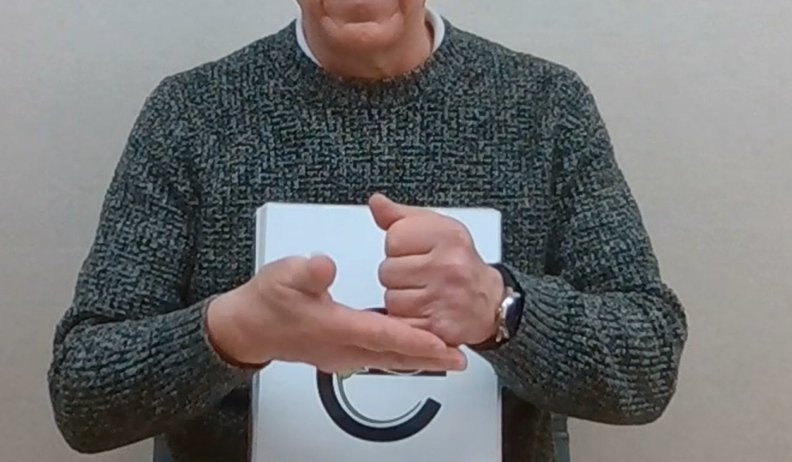

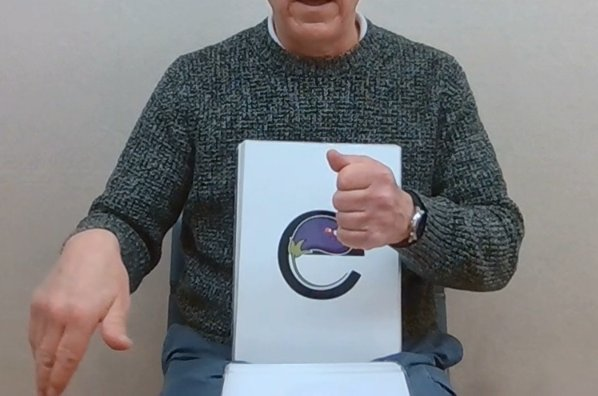

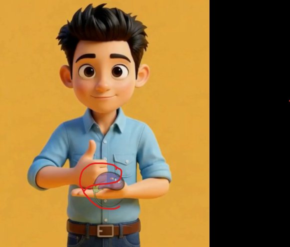

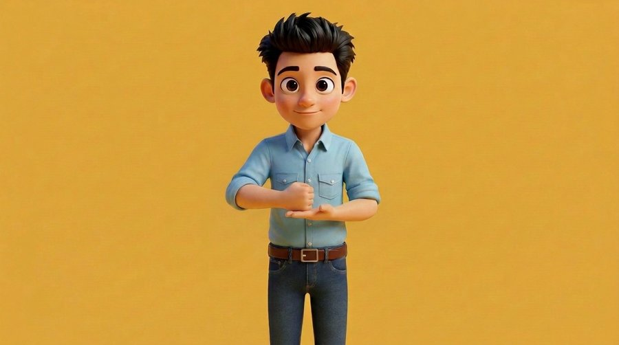

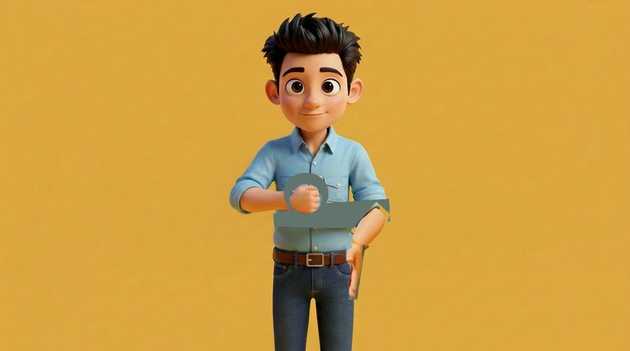

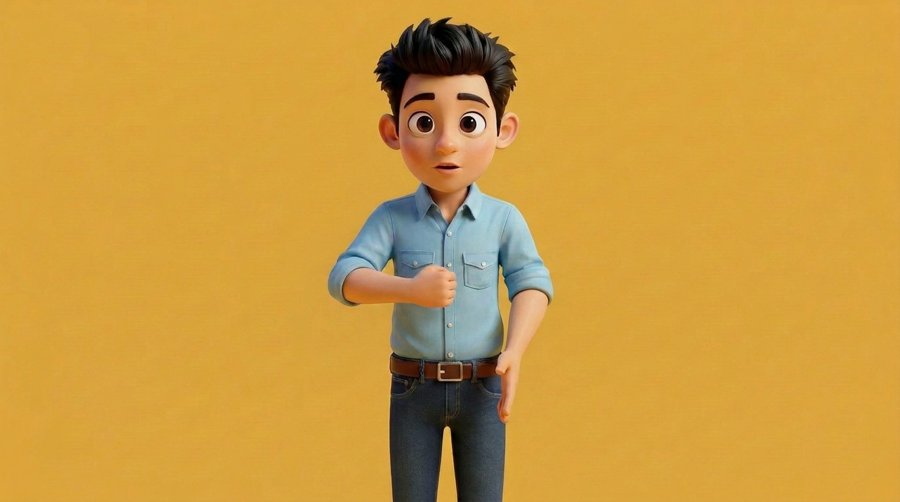

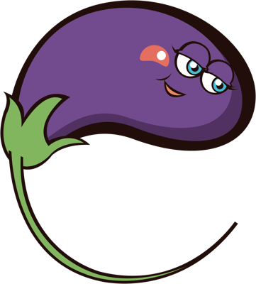
| 日時 | 北浦先生の指示（原文） | 直したこと |
|---|---|---|
| 16/10 15:19 📎 | 確認しました。 良いと思います！ とりあえずこちらを最終版として保存してください。 次は"e"をお願いします。静止画2種類（初め（e_1)と発音時の動き(e_2）)を添付しますので参考にしてください。 | v1 の素材: e_1（始め）・e_2（音の時）を受け取り |
| 16/10 15:24 | すみません。静止画ですが、左右反転させてください。難しければ再度添付します。 | v1: 先生の静止画を左右反転して手本に。始め・終わりの絵を描き、H3 で手を下ろす |
| 16/10 18:40 | ・左の腕は親指を立てないで倒してください。 ・右の腕は肘から下を伸ばすのではなく、手首だけ動かして下に下ろす感じにしてください。 ・Emmaの位置は別途画像を添付します。 | v2: 画面左のグーは親指を倒す。下ろす腕は手首だけ曲げる下絵を作って清書 |
| 16/10 18:44 📎 | Emmaの位置を赤の部分にずらして欲しいです。 ・あと、手首を曲げるだけでなく、少し肘～手首も外側へ動かしてください。 | v2: Emma を赤の位置へ（画像を v1 のコマに換算、cx938 cy654 幅110）。肘〜手首も少し外へ |
| 16/10 19:09 | 良い感じです。 ・ただ実際この手首の動きは人間だと少し難しいので、肘～手首の動きをもう少し大きくみてください。 ・動いている手が体や腕に対して大きい気がします。バランスの調整お願いします。 | v3: 腕全体を振り下ろし、動く手を 0.8 倍 |
| 16/10 19:28 | ・グーの手も大きいので調整してください。 ・動きがv1と同じような感じに戻ってしまいました。v2の動きでもう少し手首の曲がる角度を小さく、そして肘～手首をもう少し動かしてみてください。 | v4: グーも 0.75 倍。v2 の動きで手首の角度を小さく、前腕を少し動かす |
| 16/10 20:03 | おかしいですね。 v1の腕の動きを半分に、v2の手首を半分にそれぞれし、その二つの動きを同時に行うことは可能ですか？ | v5: 下絵で前腕 約45°・手首 約38°（各 v1・v2 の約半分）を同時に |
| 16/10 20:04 | 上限を超えてもいいとのことだったので生成をお願いします。 | （上限を超える生成を先生が了承） |
| 16/10 20:19 | 良くなりましたが、手を動かしている時に、体（胴）がグググッと動いているように見えるので修正してください。 | v6: 動画から貼る範囲を「動く腕の肌」だけに（胴は止めた絵） |
| 16/10 20:33 | また違う感じで旨あたりが動くようになりました。 確認お願いします。 | v7: グーの上側を止めた絵のまま、下側だけ位置合わせして貼る |
| 16/10 20:54 | 胸のあたりは良くなりましたが、固定している腕の輪郭が動いているので修正してください。 | v8: 固定の前腕とグーの輪郭まで止めた絵に（輪郭の1コマ差 38.7→8.0） |
| 16/10 21:16 | ・グーのこぶしの下側が少年の左手が動く際に引っぱられているので修正してください。 ・少年の左手がぼやけているので直してください。 ・お腹のあたりに肌色が残っているので消してください。 | v9: グーの下は「手が無いコマ」で作った土台＋今の手の肌だけ。動く手にアンシャープ。お腹の肌色 107→8 |
| 16/10 21:37 | 依頼個所は良くなりました。 ただ、止まっている場面（Emmaが出てくるところ）と動いているところの境目がガタついています。確認して修正してください。 | v10: 止まる場面も動く場面と同じ合成に（境目の1コマ差 0.46→0.06） |
| 16/10 22:00 | 良くなりました！確かに止まっている手のひらがボヤっとして見える気もしますが。もし修正できそうならお願いします。また10/19に確認します。 | v11: 最初と最後の止まる場面はくっきりした止めた絵、動き出す前 10 コマで切り替え |
| 19/10 10:57 | 確認しました。 ・初めと左手が動いている時とでシャツのお腹当たりの部分が切り替わっていて不自然です。 ・左手がベルトの前を通る時、ベルトがゆがんでいます。 2点修正お願いします。 | v12: 胴は止めた絵1枚、H3 からは動く手の肌だけ（ベルト帯の差 6.6→0.02） |
| 19/10 11:19 | ・左手が動く際にシャツに肌色が残っています。 | v13: 土台に残った始めの手のひら・親指の肌色を消す |
| 19/10 11:43 | なんか修正していくとどんどんおかしくなってきたので、v10を最終版として保存できますか？ | E 最終版 = v10（v11〜v13 は採らない。一式 lab/final-abc/E/） |
生成の指示文（全文）
始めの絵（v4 以降）（fal-ai/nano-banana-pro/edit・{"num_images": 2, "aspect_ratio": "16:9", "resolution": "1K", "output_format": "png"}）
Clean up this rough cut-and-paste picture into a finished 3D animated cartoon frame. Keep EVERYTHING exactly as it is: the boy, face, hair, clothes, yellow background, framing, the pose, and especially the SIZE and position of both hands — the closed fist (thumb folded flat) is small, keep it that small; the open hand is small, keep it that small. Only repair the flaws: grey patches, gaps, hard cut edges, mismatched shirt colour; the shirt is complete and unstretched. No text, no watermark. Mouth closed in a gentle smile, eyes open.
終わりの絵（v5 以降・下絵 sk5 を清書、候補01）（fal-ai/nano-banana-pro/edit・{"num_images": 2, "aspect_ratio": "16:9", "resolution": "1K", "output_format": "png"}）
Clean up this rough cut-and-paste picture into a finished 3D animated cartoon frame. Keep EVERYTHING exactly as it is: the boy, face, hair, clothes, yellow background, framing, the pose, and especially the SIZE and position of both hands — the closed fist (thumb folded flat) is small, keep it that small; the open hand is small, keep it that small. Only repair the flaws: grey patches, gaps, hard cut edges, mismatched shirt colour; the shirt is complete and unstretched. No text, no watermark. The forearm (elbow to wrist) is lowered partway, about halfway down, angled down and slightly outward, with the elbow staying near his side; the open hand is bent down at the wrist only moderately, about 35 to 40 degrees, fingers pointing down and outward, at about belt height. His lips part slightly for a short 'eh' sound. Eyes open.
手の動き（v5 以降・seed751）（minimax/h3-max-turbo/image-to-video・{"duration": 5, "resolution": "768P", "prompt_expansion_mode": "disabled", "seed": 751}）
A standing 3D animated cartoon boy in front of a plain warm yellow background. A small closed fist (thumb folded flat) rests on his other small flat palm-up hand in front of his stomach. Slowly and smoothly, at the same time, the forearm of the open hand swings down and a little outward from the elbow (about halfway down), and the hand bends gently down at the wrist (about 35 to 40 degrees); both movements happen together in one smooth motion. The elbow stays near his side. Both hands keep the same small size. The fist stays perfectly still in the air and stays closed. The shirt does not stretch. Head, face and shoulders stay perfectly still, eyes open looking at the camera, no blinking, mouth closed. Fixed camera, no movement, no zoom, no cut. No other people, no objects, no text.
口（f112..f118 を口元だけ使用）（minimax/h3-max-turbo/image-to-video・{"duration": 5, "resolution": "768P", "prompt_expansion_mode": "disabled", "seed": 505}）
A standing 3D animated cartoon boy in front of a plain warm yellow background. He holds a thumbs-up fist in front of his chest (the arm from the picture's left), resting on his other flat palm-up hand. Slowly and smoothly, only the flat hand (the arm from the picture's right) pulls away from under the fist and drops down and out to the side to hip height, opening loosely with fingers pointing down, palm down, like letting an egg drop into a pan. The thumbs-up fist stays perfectly still in place. The elbows stay near his sides. The shirt is loose cotton that does not stretch at all: no fabric pulling or stretching folds, sleeves keep their shape. His head, face and shoulders stay perfectly still; eyes open looking at the camera, no blinking, mouth closed. The camera is fixed straight in front at eye level: no camera movement, no zoom, no cut. No other people, no objects, no text.
声G（fal-ai/elevenlabs/voice-changer・{"voice": "Liam", "remove_background_noise": false, "seed": 7, "output_format": "pcm_44100"}）
F — Freddy French Fry /f/
いまの版: 最終版 v13（10/20 12:22）。一式 lab/final-abc/F/
作り方: ~/pros-kyozai/drafts/2026-10-20_f-v11/work/compose_f11.py ＋ f-v12/work/fpatterns.py（C） 録音: 引継ぎ zip の audio/06/F_Freddy_French_Fry.mp3 → 声G

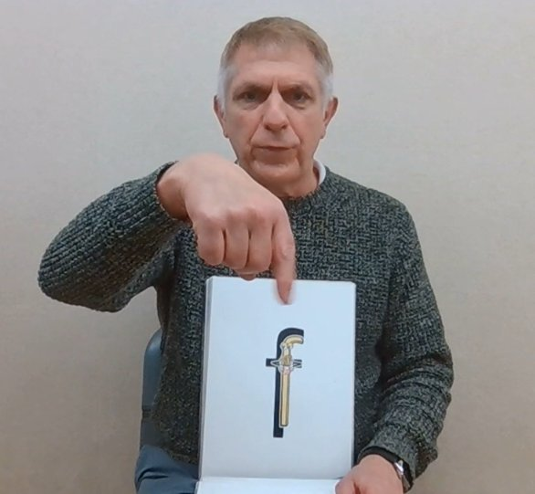

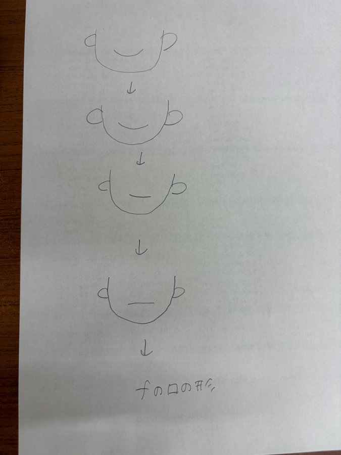

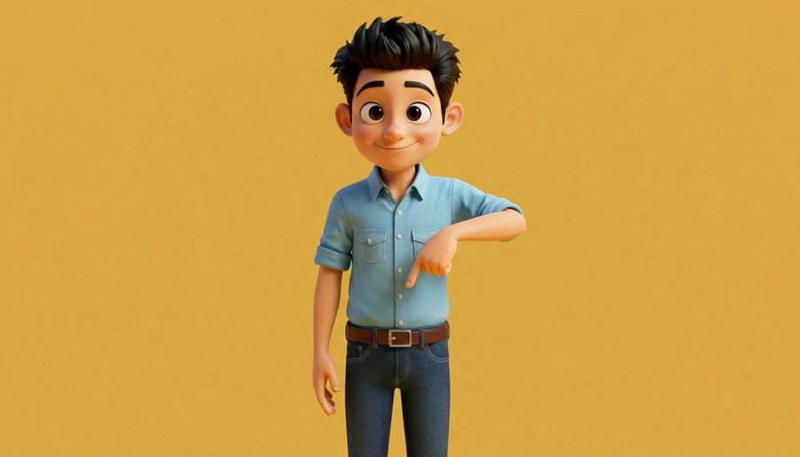

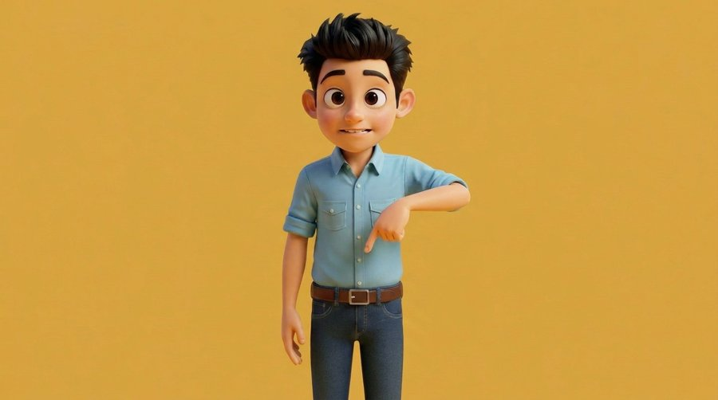

| 日時 | 北浦先生の指示（原文） | 直したこと |
|---|---|---|
| 19/10 11:56 | では次はfをお願いします。 お渡し済みの動画等とこちらの添付画像を参考にして作成してください。 fの動きは画像の状態で"ffffff"と発音しながら左右に小刻みに小さく振る動きです。 出来たら新しいスレッドに載せてください。 | v1 の素材: f_1（この形で "ffff" と言いながら手を左右に小刻みに小さく振る） |
| 19/10 12:04 | はい、生成をお願いします。 | （生成を承認） |
| 19/10 12:12 | はい、反転してください。 あと、Freddyの位置は、指をさす手の少し下にしてください。今回は重ねるのではなく、指から塩が出てるイメージで、その下にFreddyがいる感じです。 | v1: f_1 を左右反転。Freddy は手に重ねず、指先から塩が出てその下に |
| 19/10 13:21 | ・手を振る際、腕全体ではなく、手首のみ動かしてください。 ・Freddyの位置がずれているので指の数センチ下にFreddyがいるように調整してください。あともう少し小さくしてください。 ・fの口の形は、その形でもう少し閉じて歯がほとんど見えなくていいです。 | v2: H3 の腕を使わず、止めた絵の手を手首中心に ±8°・4Hz で回す。Freddy を指の下へ。口は上下の唇を寄せて歯をほぼ隠す |
| 19/10 14:08 | ・手の位置をもう少し上（胸前あたり）にしてください。 ・手の向きですが、手の甲が見えるように少し角度を調整してください。 ・Freddyはもう少し小さくていいです。（他のキャラクターと同じぐらい） ・口の形は良くなりましたが、はじめの口から急に切り替わるので自然に見えるよう調整してください。 ・塩の量はパラパラとほんの少しで良いです。 | v3: Freddy 幅 84→56、塩 22 粒。口を 0.33 秒で切り替え（手を胸前・甲を見せる2点は生成が要るため保留） |
| 19/10 14:29 | ・口はまだいきなり変わっているので他の時の様になめらかにしてください。 ・塩の量とFreddyの大きさはこれで良いです。 発音ですが、音の初めに「ツー」と聞こえるのが気になります。破裂音を消すことは出来ますか？ | v4: 口は笑顔の線を f の口の線へ縦に変形してつなぐ（0.7 秒）。音の頭の「ツー」を弱める（先頭 80ms 無音＋150ms フェードイン＋低域カット） |
| 19/10 14:50 | ・まだ口の形の変わり目が不自然です。 ・音は良くなりました。 ・手の位置は一旦これでもいいです。また修正して欲しい場合お伝えします。 | （音は OK、手の位置は一旦 OK）。手元の素材で3方式試すも v4 を超えず → 方式を相談 |
| 19/10 15:01 | 出来れば初めの顔は同じ方が発音の際の口の形が分かりやすいと思うのでAの方法でお願いしたいです。 | A 方式（口だけ動く H3 を生成、はじめは笑顔のまま）に決定 |
| 19/10 15:56 | 1の方法を試してみてください。 | v5: 口だけ動く H3（h3_fmouth8）のコマ 21/78/79 を中間に、変化量に比例した時間で変形（1.0 秒） |
| 19/10 18:40 📎 | 口の動きが変になりました。 添付のイラストのように徐々に口角を下げていったら自然になるのではないでしょうか？ | v6: 先生のイラストどおり「笑顔→口角を少しずつ下げる→横一文字の閉じた口→f の口」 |
| 20/10 10:38 | ましになりましたがまだ左右の動きが対象でなかったり変わり目がなめらかじゃないですね。 あと最後の/f/の口の際だけ少し肌の色が暗いような気がします。 | v7: f の口を左右対称・水平に直し、肌の明るさを合わせる。前半は笑顔→横一文字、後半は横一文字→f の口 |
| 20/10 11:08 | まず初めの笑顔の口が大きい気がします。 一度やりなおしてもらえますか？ eを参考に、初めの口は同じで、/f/の口は/e/の口をもう少し閉じたぐらいにしてみてください。 | v8: 休みの口と /f/ の口を E と同じ素材に（E の H3 の口を目鼻で位置合わせして貼る。1コマ1枚で混ぜない） |
| 20/10 11:31 | こちらの方がなめらかなので良いですが、/f/の時もうすこし口を閉じさせてください。 | v9: /f/ の口をもう少し閉じる（E の口のコマ 115 で止める） |
| 20/10 11:39 | もう少し閉じて下さい。上の前歯が下唇に少し当たるぐらいにしてください。 | v10: 下唇だけ 2.5px 上げ、上の前歯が下唇に少し当たる形に |
| 20/10 11:53 | 良くなりました。 正面から見て右側の頬に切れ目（口の残像？）があるので修正してください。 | v11: 口角側だけ貼る範囲を 10px 上へ広げ、頬の切れ目を消す |
| 20/10 12:05 | 良くなりました。 発音ですが、少しssssとも聞こえるのでもう少しffffに近づけたいです。他のパターンは作れますか？ | v12: /f/ の音を4パターン（生成なし、フィルターだけ）。声G の /f/ は 6〜9kHz が強く ssss 寄りだった |
| 20/10 12:15 | Cが良いと思います | v13: C の音（平らな息の音を声G の強弱の形で鳴らす） |
| 20/10 12:22 | はい、一旦これを最終版としてください。 | F 最終版 = v13（一式 lab/final-abc/F/） |
生成の指示文（全文）
始めの絵（候補00 を左右反転して使用）（fal-ai/nano-banana-pro/edit・{"image_urls": ["https://v3b.fal.media/files/b/0aaef456/aRlsBvhSwCpPdMunasA6h_a_mirror.png", "https://v3b.fal.media/files/b/0aaef456/qtT1oQ9pPNy7grxff59aP_f_1.png"], "num_images": 2, "aspect_ratio": "16:9", "resolution": "1K", "output_format": "png"}）
Edit Image 1 only. Keep Image 1's exact art style: the same 3D CGI Pixar-like render with soft volumetric shading, skin and fabric texture, the same black hair color, same face, same single chest pocket, same dark-blue jeans, same yellow background, same framing, size and position. Do NOT turn it into 2D, flat or outlined cartoon style. Change only his arms and hands. Image 2 is only a reference for the pointing hand shape; do not copy anything else from it. LEFT/RIGHT as seen in the picture: the arm on the LEFT SIDE OF THE PICTURE bends at the elbow, elbow out to the picture's left, forearm roughly horizontal across the front of his lower chest. That hand points: only the index finger straight, other fingers and thumb curled in, back of the hand toward the camera, index finger pointing straight down, the fingertip in front of the center of his body at lower-chest height. The arm on the RIGHT SIDE OF THE PICTURE hangs relaxed straight down at his side, hand loosely open at hip height. Nothing held. Mouth closed, relaxed neutral smile. Normal child-size hands. No text.
f の口の静止画（候補01・v4 以降の終わりの口）（fal-ai/nano-banana-pro/edit・{"image_urls": ["https://v3b.fal.media/files/b/0aaef460/qUizqtCJQvTljCug6lR88_key_f_start.png"], "num_images": 2, "aspect_ratio": "16:9", "resolution": "1K", "output_format": "png"}）
Edit this picture. Keep everything exactly the same: the same 3D CGI style, same boy, same face, eyes, hair, arms, hands, clothes, yellow background, framing, size and position. Change ONLY his mouth: he is saying the English sound /f/: the upper front teeth rest lightly on the middle of the lower lip, the lower lip tucked slightly under the upper teeth, lips relaxed, mouth only slightly open, no lower teeth visible, not smiling widely. Eyes open looking at the camera. No text.
手と体の H3（v1 のみ。v2 以降は止めた絵の手首を回す）（minimax/h3-max-turbo/image-to-video・{"image_url": "https://v3b.fal.media/files/b/0aaef460/qUizqtCJQvTljCug6lR88_key_f_start.png", "duration": 5, "resolution": "768P", "prompt_expansion_mode": "disabled", "seed": 606}）
A standing 3D animated cartoon boy in front of a plain warm yellow background, holding his pose: the arm from the picture's right is bent across his chest with the index finger pointing straight down; the other arm hangs at his side. After a short pause he makes a long 'fffff' sound: his upper front teeth rest gently on his lower lip, lips relaxed and slightly apart, and at the same time only the pointing hand shakes quickly side to side in small motions, a few centimeters left and right from the wrist, like sprinkling salt from his fingertip. The pointing finger keeps pointing down. Then the hand stops and the mouth closes into a gentle smile. His head, shoulders, body and the hanging arm stay perfectly still; eyes open looking at the camera, no blinking. The shirt does not stretch. The camera is fixed straight in front at eye level: no camera movement, no zoom, no cut. No other people, no objects, no salt, no text.
口だけ動く H3（v5・笑顔→f の口、コマ 21/78/79 を使用）（minimax/h3-max-turbo/image-to-video・{"image_url": "https://v3b.fal.media/files/b/0aaef460/qUizqtCJQvTljCug6lR88_key_f_start.png", "duration": 5, "resolution": "768P", "prompt_expansion_mode": "disabled", "seed": 636, "end_image_url": "https://v3b.fal.media/files/b/0aaef943/yYWtBAgYh-oP873ZAl7W4_01_wBGR81dI_uCIL9kEXTWAF_EdejYKOF.png"}）
A standing 3D animated cartoon boy in front of a plain warm yellow background, holding his pose completely still. Only his lips move, slowly and smoothly and continuously over the whole clip: from a gentle closed-mouth smile, the lips relax and the lower lip softly tucks under the upper front teeth into an 'f' sound mouth, arriving exactly at the final image. The mouth never opens wide, no laughing, no grin, the jaw does not drop. Eyes stay open looking at the camera, no blinking. Head, eyebrows, body, arms and hands stay perfectly still. Fixed camera, no zoom, no cut. No objects, no text.
声G（fal-ai/elevenlabs/voice-changer・{"audio_url": "https://v3b.fal.media/files/b/0aaef423/R2svsKh74uCdY3xagIFnx_src_concat.wav", "voice": "Liam", "remove_background_noise": false, "seed": 7, "output_format": "pcm_44100"}）
G — Gary Grape /g/
いまの版: 最終版 v9（10/21 14:07）。一式 lab/final-abc/G/
作り方: ~/pros-kyozai/drafts/2026-10-21_g-v9/work/compose_g9.py ＋ mk_t.py ＋ soft_g.py 録音: 引継ぎ zip の audio/07/G_Gary_Grape.mp3 → 声G → U1（asetrate＋EQ、約198Hz）

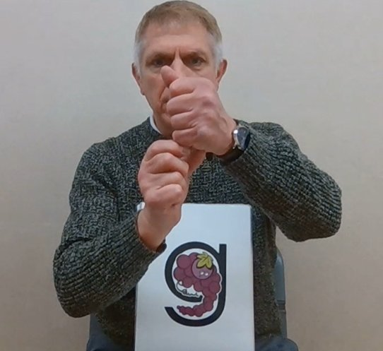

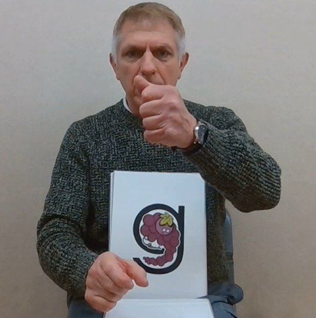


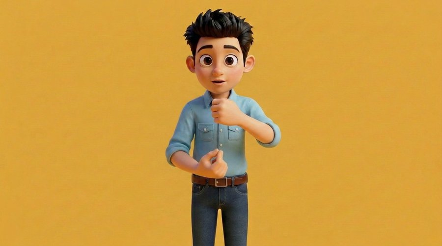

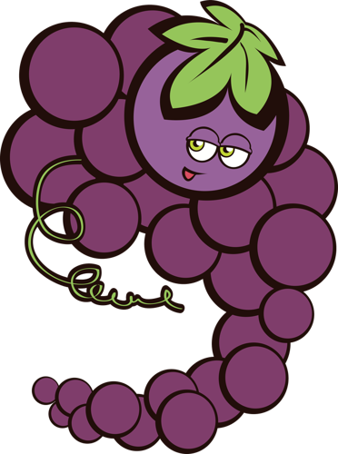
| 日時 | 北浦先生の指示（原文） | 直したこと |
|---|---|---|
| 20/10 12:26 📎 | gの初め（g_1）と/g/の時の動き（g_2）です。 ・反転はしなくていいです。 ・顔の前に左手がありますが少し下げて首～胸前ぐらいにしてください。 ・左手でGaryを持っていて、右手でその一粒を取るような動きです。 ・なのでGrayは左手に重ねて他のキャラクターと同じぐらいの大きさでお願いします。 | v1 の素材: g_1・g_2（反転なし。左手は首〜胸前、Gary を持ち右手で一粒取る、Gary は左手に重ね他と同じ大きさ） |
| 20/10 12:32 | OK | （生成を承認・約 $1.0） |
| 20/10 13:09 | OK | （追加の費用を承認）。v1: 始めと終わりの絵＋H3、体と顔は止め、つまむ手と口だけ貼る |
| 20/10 13:51 | ・声が他より高く聞こえるのですが一緒ですか？ ・右の文字（上の方）のキャラクターに重なったgの文字の左側が少し欠けています。 | v2: カードの切り出し窓を広げ g の左の欠けを直す。声を 211→168Hz |
| 20/10 14:08 | ・声が少し違う気がします。再度他の動画を確認して同じ声にしてください。ちなみに、声は全てはじめに作った"a"から生成してくれていますか？そうしないとだんだん声質が変わるので全て”a"を基準にしてください。 ・/g/の初めに破裂音があるのが気になります。 | v3: 声は A を基準に 180Hz へ（WORLD）。/g/ の出だしの破裂音を消す（声の前を無音、40ms でなだらかに） |
| 20/10 14:27 | Aの時よりロボット感が強めに聞こえるのですが、何か考えられる理由はありますか？ | （理由: WORLD の再合成がロボット感の原因 → 今後使わない） |
| 20/10 14:28 | お願いします。 B～Fも合わせた方が良いと思うのですが、一旦Gを作ってから考えましょうか。 | v4: P1=速さを変えずに高さだけ下げる（asetrate）/ P2=PSOLA。どちらも 180Hz |
| 20/10 15:44 | P1の方が良いですが、確かに声が低いですね。それは合わせることは出来るのででしょうか？ | v5: P1 に PSOLA を少し混ぜて明るさを2段階（S1・S2） |
| 20/10 18:27 | どちらも雑音が混ざったような変な声になっています。なめらかにできますか？ | v6: PSOLA がざらつきの原因 → やめる。asetrate だけ＋EQ で明るさ（T1 180Hz・T2 190Hz）。10/21 に先生が確認 |
| 20/10 18:28 | 明日確認します。 | |
| 20/10 18:49 | 確認が間に合いました。 ・T2の方が近いかなとは思いますがなんか声質が若干違う（低め）気もします。 ・左の口元に残像があるので修正してください。 | v8: T2 より高い U1（約198Hz）・U2（約205Hz）。口を貼る範囲を口角の外まで広げる |
| 20/10 18:50 | あと、左の口元に残像があるので修正してください。 | （同上・左の口元の残像） |
| 20/10 18:52 | 明日確認します。 | |
| 21/10 13:45 | とりあえずU1でお願いします。 そこまで気になりませんがまだ口角の後が残っていますね。 | v9: 声は U1。口角の外のしわの線を、口角ごとの小さな範囲で覆う |
| 21/10 14:07 | 良くなりました。 声質に関しては全アルファベット完成後に必要に応じて修正をする方が良いかもしれません。なので次のHの生成をお願いします。 別途添付と指示を書きます。 | G 最終版 = v9。声質は全アルファベット完成後に必要なら直す |
生成の指示文（全文）
始めの絵（候補00 を使用）（fal-ai/nano-banana-pro/edit・{"image_urls": "（画像の URL）", "num_images": 2, "aspect_ratio": "16:9", "resolution": "1K", "output_format": "png"}）
Edit Image 1 only. Keep everything of Image 1 exactly: same 3D Pixar-like render style, same boy, face, hair, shirt with pocket, belt, jeans, yellow background, framing, size and position. Change only the two hands and forearms. Image 2 is only a reference for the hand pose (not mirrored); copy nothing else from it. Directions as seen in the picture. RIGHT SIDE OF THE PICTURE (boy's own left hand): a loose fist with the knuckles toward the camera, held in front of the center of his body at collarbone height, just below the chin; the whole face and mouth stay fully visible. LEFT SIDE OF THE PICTURE (boy's own right hand): held just below that fist with a small gap of about one finger width, palm facing up toward the fist, thumb tip and index fingertip pressed together in a clear small pinch as if holding one grape, the other three fingers gently curled. The two hands are clearly separate, each with five natural fingers. Mouth closed, gentle smile. Normal child-size hands. No text.
終わりの絵（候補00 を使用）（fal-ai/nano-banana-pro/edit・{"image_urls": "（画像の URL）", "num_images": 2, "aspect_ratio": "16:9", "resolution": "1K", "output_format": "png"}）
Edit Image 1 only. Keep everything of Image 1 exactly the same: same 3D Pixar-like render style, same boy, same face and eye size, hair, shirt with pocket, belt, jeans, yellow background, framing, size and position. The hand on the RIGHT SIDE OF THE PICTURE (the boy's own left hand, the fist near his collarbone) must stay exactly where and as it is, pixel for pixel. Move ONLY the hand on the LEFT SIDE OF THE PICTURE (the boy's own right hand, the pinching hand): slide it straight down, without rotating the wrist and keeping exactly the same pinch shape and the same orientation as in Image 1 (thumb tip and index fingertip touching, holding one grape), until it is just above his belt buckle, in front of his belly. Its forearm and elbow follow naturally, elbow bent at his side. Image 2 is only a reference for how far down the hand goes (not mirrored); copy nothing else from it. Face: keep the eyes the same size as Image 1; only the mouth changes, lips relaxed and slightly apart as when saying 'g'. No text.
動き（seed771）（minimax/h3-max-turbo/image-to-video・{"image_url": "（作業場の inputs/*_url.txt）", "end_image_url": "（作業場の inputs/*_url.txt）", "duration": 5, "resolution": "768P", "prompt_expansion_mode": "disabled", "seed": 771}）
A standing 3D animated cartoon boy in front of a plain warm yellow background. One loose fist is held still near his collarbone, and his other hand pinches one small grape just below it. Slowly and smoothly, only the pinching hand moves straight down to just above his belt, keeping the same pinch and the same wrist angle; its elbow stays near his side. The fist near the collarbone stays perfectly still. The shirt does not stretch. Head, face and shoulders stay perfectly still, eyes open looking at the camera, no blinking. Fixed camera, no movement, no zoom, no cut. No other people, no objects, no text.
声G（Liam seed7、その後 +4半音 → v6 は asetrate×0.853＋EQ）（fal-ai/elevenlabs/voice-changer・{"audio_url": "（作業場の inputs/*_url.txt）", "voice": "Liam", "remove_background_noise": false, "seed": 7, "output_format": "pcm_44100"}）
H — Hazel Ham /h/
いまの版: 最終版 v10（10/21 20:58）。一式 lab/final-abc/H/
作り方: ~/pros-kyozai/drafts/2026-10-21_h-v10b/work/compose_h6.py（CW=420 CX=1610） 録音: 引継ぎ zip の H の録音 → 声G。名前の z は fix_z.py、/h/ は先生の録音の息（mk_hbreath.py）

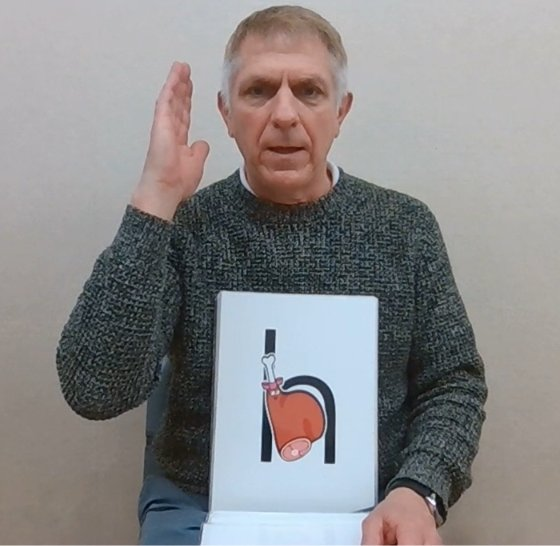

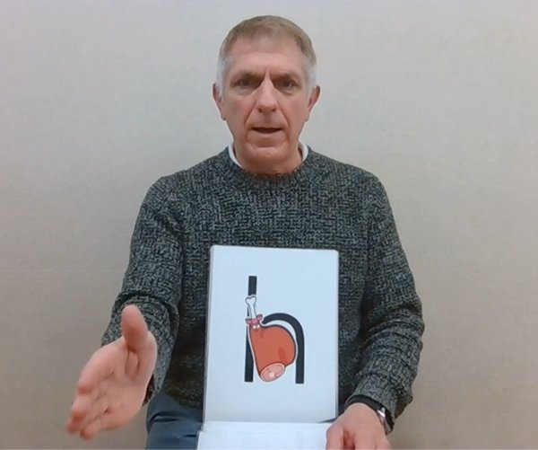

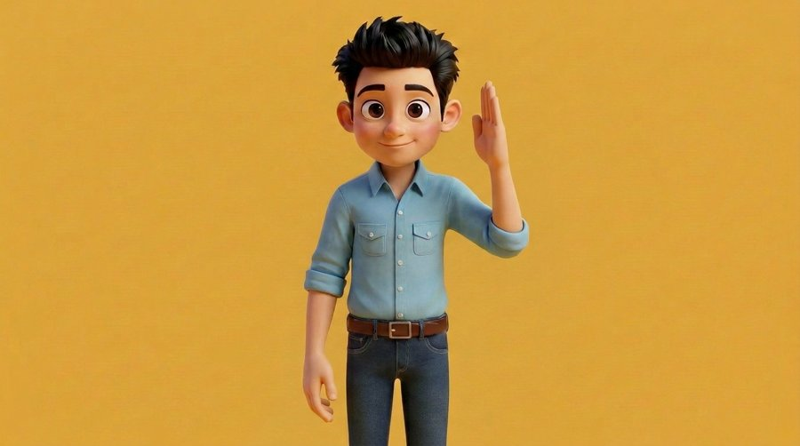

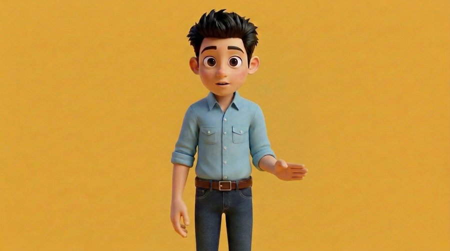

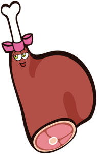
| 日時 | 北浦先生の指示（原文） | 直したこと |
|---|---|---|
| 21/10 14:11 📎 | ・反転で使用してください（左手を動かす） ・Hazelは振り下ろした手の先（手でHazelを切る感じ）の位置に他のアルファベットと同様の大きさで置いてください。 | v1 の素材: h_1・h_2 を左右反転（左手を動かす）。Hazel は振り下ろした手の先、他と同じ大きさ |
| 21/10 14:50 | OK | （生成を承認）。v1: 頭の横から腰の高さへ振り下ろす |
| 21/10 15:16 | ・腕を横ではなく、前に振り下ろしてください。角度は90°です。 ・/h/の発音が「ハッ」ではなく「シュッ」に聞こえます。何を参考に作っていますか？ | v2: /h/ は先生の録音の「ハッ」の息をそのまま使う（声G に変えると「シュッ」になる）。腕は保留 |
| 21/10 15:31 | 分かりました。続けてください。 下ろした腕の向きですが、手のひらは上にせずはじめと同じ向き（前から見て左向き）にして下さい。 | （下ろした手のひらは上にせず、始めと同じ向き） |
| 21/10 15:47 | 発音をもう少し短くしてください。 | v3: /h/ の息を約0.28→0.16秒に |
| 21/10 15:54 | 長さは良いのですが、少しぶつっと切れている気がするので修正してください。 腕の振り下ろす件、1でお願いします。 | v4: 息の終わりをなだらかに消す。腕は作り方1を試したが生成で前へ倒れず |
| 21/10 18:37 | ・/h/は良くなりましたが、Hazelの発音（特にzの部分）が少し違うように聞こえます。 ・正面から撮った「振り下ろし終わった形」の写真は初めに添付した『h_2ですが別の写真が必要ということでしょうか？ | v5: 名前 Hazel の z のこすれる音を、先生の録音から戻す（fix_z.py） |
| 21/10 19:04 | 音声は良くなりました。 腕ですが、1の「腕を伸ばして」というのが気になりますが、腕を振り下ろしても伸ばさず、下ろした際に角度が90°ぐらいになるという意味なのですが認識は合っていますか？ | （認識: 伸ばさず、下ろした時に肘が約90°） |
| 21/10 19:06 | OK | v6: h_2 どおりに下絵 → 清書 → H3。肘90°で振り下ろす |
| 21/10 19:26 | 少し良くなりました。 ・できれば体の前に手を下ろして欲しいですが、難しそうですかね？ ・スペースが空いたので右側のカードは元の大きさ（他と同じ）に戻してください。 ・手刀は立てたままの方が良いです。 | v7: 手刀を立てたまま体の前へ。カードを他と同じ大きさに戻す |
| 21/10 19:28 | OK | |
| 21/10 19:57 | すみません。伝え方が悪かったです。 ・初めの位置も、手を振り下ろすのも、肩の位置にそろえてください。なので少し脇を締める必要があるかと思います。 ・正面から見ると、はじめの位置の時に手の平が顔の横あたり（手のひらは顔の方を向いている）にある状態です。 ・そしてそのまま真っすぐ前に振り下ろす感じです。 再度添付画像のh_1を確認してみてください。 | （始め・振り下ろしとも肩の位置、脇を締める、手のひらは顔の方。生成で出せず） |
| 21/10 19:58 | OK | |
| 21/10 20:13 | 確かに難しそうですね。 とりあえず今回はv6でもう少しだけ内側に手を下し、手刀は立てたままにしてみてください。 でも今後他のアルファベットでも同じように前に手を出す動き（例えばK）があるので少し心配ですね。 | v9: v6 の振り下ろし方で少し内側へ、手刀は立てたまま |
| 21/10 20:16 | OK | |
| 21/10 20:30 | ・斜めに振り下ろすのではなく、真っすぐ下ろして欲しいです。 ・手刀は立てたままというのはそういう意味ではなく、手のひらを上にせずそのまま倒して欲しいという意味です。（分かりにくければv6のままで良いです） | （真っすぐ下ろす・手のひらを上にせず倒す。生成で出せず） |
| 21/10 20:33 | 先ほどのメッセージを編集したので確認してください。 | |
| 21/10 20:39 | ＯＫ | |
| 21/10 20:50 | 一旦v6にしておきましょうか。 ただHazelの位置が少し右過ぎるのでもう少し左（手のひらの真下ぐらい）に調整してください。 | v10: v6 に戻し、Hazel を手のひらの真下へ（左へ約105px） |
| 21/10 20:58 | 良いと思います。 一応これを最終版で保存してください。 次のIは後程送ります。 | H 最終版 = v10。K など前へ手を出す文字は本番前に小さく試作して見せる |
生成の指示文（全文）
始めの絵（fal-ai/nano-banana-pro/edit・{"image_urls": "（画像の URL）", "num_images": 2, "aspect_ratio": "16:9", "resolution": "1K", "output_format": "png"}）
Edit Image 1 only. Keep everything of Image 1 exactly: same 3D Pixar-like render style, same boy, face, eye size, hair, shirt with pocket, belt, jeans, yellow background, framing, size and position. Change only the two hands and arms. Image 2 is only a reference for the arm pose (already mirrored, use it as is); copy nothing else from it. Directions as seen in the picture. RIGHT SIDE OF THE PICTURE (the boy's own left hand): raised beside his head as a flat open karate-chop hand, fingers straight together and pointing up, thumb along the side, the edge of the hand (little-finger side) facing down/outward, at about ear height and slightly away from the head so the whole face stays visible. LEFT SIDE OF THE PICTURE (the boy's own right arm): relaxed and hanging down at his side, hand loosely open. Mouth closed, gentle smile. Normal child-size hands with five natural fingers. No text.
終わりの絵（下絵の清書・v6 で採用）（fal-ai/nano-banana-pro/edit・{"image_urls": "（画像の URL）", "num_images": 2, "aspect_ratio": "16:9", "resolution": "1K", "output_format": "png", "seed": 871}）
Image 1 is a rough paste-up sketch that fixes the exact POSE. Image 2 is the original render that fixes the CHARACTER and STYLE. Redraw Image 1 cleanly in the exact 3D Pixar-like render style of Image 2: same boy, same face, eyes, hair, light-blue shirt with rolled sleeves and pocket, belt, jeans, plain yellow background, same framing, size and position. KEEP THE POSE OF IMAGE 1 EXACTLY, do not change the arm positions: the arm on the RIGHT SIDE OF THE PICTURE has the upper arm hanging straight down along the side of the body, the elbow bent about 90 degrees beside the waist, the short forearm coming forward and slightly outward, and a flat karate-chop hand at belt height, fingers together pointing to the lower right, thumb on top. Do NOT straighten the arm, do NOT raise it. The arm on the LEFT SIDE OF THE PICTURE hangs straight down, exactly as in Image 2. Same hand size as Image 2. Mouth open a little, relaxed. Five fingers, no text, no extra objects.
H3 顔と口（seed781）（minimax H3（h3-max-turbo）・{"image_url": "（画像の URL）", "end_image_url": "（画像の URL）", "duration": 5, "resolution": "768P", "prompt_expansion_mode": "disabled", "seed": 781}）
A standing 3D animated cartoon boy in front of a plain warm yellow background. One hand is raised beside his head as a flat karate-chop hand. Slowly and smoothly, he chops that hand down and out to the side to waist height, opening it with the palm up, like gently cutting something. His other arm hangs still at his side. The shirt does not stretch. Head, face and shoulders stay perfectly still, eyes open looking at the camera, no blinking; near the end his lips part a little as if breathing out 'h'. Fixed camera, no movement, no zoom, no cut. No other people, no objects, no text.
H3 腕（seed891・v6 以降）（minimax H3（h3-max-turbo）・{"image_url": "（画像の URL）", "end_image_url": "（画像の URL）", "duration": 5, "resolution": "768P", "prompt_expansion_mode": "disabled", "seed": 891}）
A standing 3D animated cartoon boy in front of a plain warm yellow background. One hand is raised beside his head as a flat karate-chop hand. Slowly and smoothly, he chops that hand down diagonally forward and outward: the upper arm drops to his side and the elbow stays bent, ending at about 90 degrees beside his waist with the flat hand at belt height. The arm never straightens. His other arm hangs still at his side. The shirt does not stretch. Head, face and shoulders stay perfectly still, eyes open looking at the camera, no blinking; near the end his lips part a little as if breathing out 'h'. Fixed camera, no movement, no zoom, no cut. No other people, no objects, no text.
声G（Liam seed7 → +4半音）（fal-ai/elevenlabs/voice-changer・{"audio_url": "（音声の URL）", "voice": "Liam", "remove_background_noise": false, "seed": 7, "output_format": "pcm_44100"}）
I — Izzy Ita Palm /i/
いまの版: 最終版 v8（10/22 17:32）。一式 lab/final-abc/I/
作り方: ~/pros-kyozai/drafts/2026-10-22_i-v6/work/compose_i8.py 録音: 先生指定の基準音声 I_Izzy_Ita_Palm → 声G（v3 の G_i_name_padded / G3_i_call）

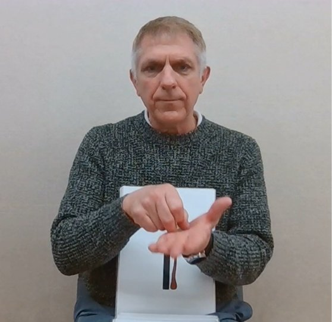

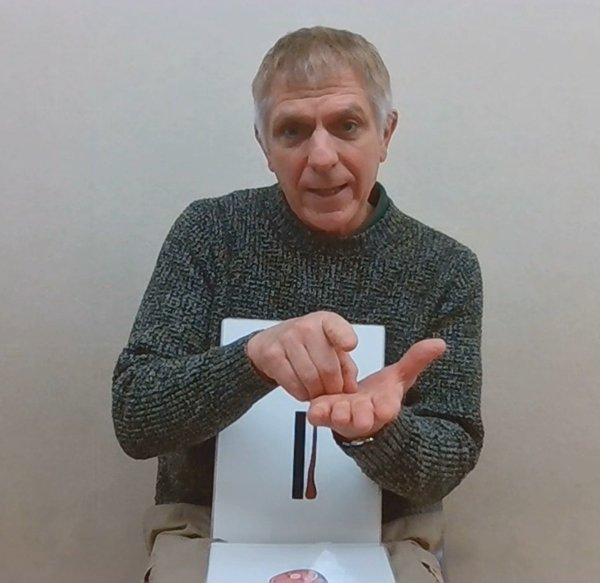

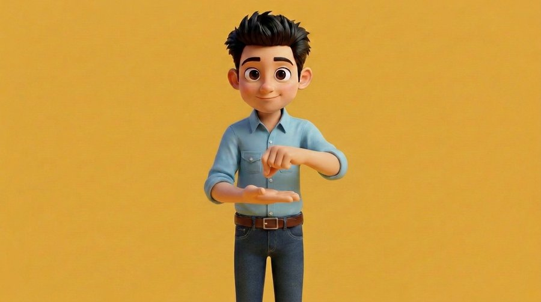

| 日時 | 北浦先生の指示（原文） | 直したこと |
|---|---|---|
| 21/10 21:07 📎 | i_1：はじめ i_2：/i/発音時 ・左右反転してください。 ・手のひらは指を曲げずに真っすぐ水平で上向きで良いです。（写真は少し斜めになって親指が上がっている） ・Izzyの位置はiの点の部分が手のひらの上に来る位置に配置してください。 ・もう片方の手はピンッと種をはじくような動作です。はじく瞬間に/i/と発音します。 | v1 の素材: i_1・i_2 を左右反転。パーは指を伸ばし水平・上向き。Izzy は i の点が手のひらの上。はじく瞬間に /i/ |
| 21/10 21:12 | OK | （生成を承認） |
| 21/10 21:15 | どこかで発音の確認のスレッドがありませんでしたかね？ | （発音確認のスレッドを案内） |
| 21/10 21:39 | ・Izzyが手の後ろに来ているので前にしてください。 ・口の形は良いのですが動きがなめらかではありません。他のアルファベットと同様の作り方でお願いします。 ・Izzy Ita Palmの発音ががたがたしていておかしいです。 | v2: Izzy を手の前へ。口は E・F と同じ作り方（E の口を1コマずつ貼る） |
| 21/10 21:40 | あと、ピンとはじく指は良いのですが、腕が途中で途切れています。肘の方までつながるように修正してください。 | v2: はじく手を貼る範囲を肘の方まで広げる |
| 21/10 21:42 | 音声は以下のもので問題ないのでこちらを使ってみてください。 [https://ktailabo.tail5c4c1d.ts.net/pros/pl/htigwx84apfftyoi4p1w9a7bky](https://ktailabo.tail5c4c1d.ts.net/pros/pl/htigwx84apfftyoi4p1w9a7bky) | v2: 先生指定の基準音声（I_Izzy_Ita_Palm）を使う |
| 22/10 14:09 | ・口の動きは良くなりましたが、もう少しなめらかになると良いなと思います。 ・発音はこれで良いですが、声質は他のアルファベット（基準はA）にしてください。 ・ピンっとする際に腕が揺れていますが、固定で指だけピンっとはじくことは出来ますか？ ・もう片方のパーの手の方ですが、もう少しだけ指を正面に向くように角度を調整してください。 | v3: 口は休みの時も同じ流れの口を貼る。声は A と同じ声G。腕は止め、指だけはじく |
| 22/10 14:17 | 他に方法がないなら仕方ないと思うのですがどうですか？ | |
| 22/10 14:35 | 変になる可能性がある部分なので迷いますね。一旦それ以外が出来たら見せてください。 | |
| 22/10 14:44 | 口：休みの時も同じ流れの口を貼り、開き始めの段を減らしました 声：A と同じ声G にしました（名前・/i/ とも） 腕：手首から肘は止めたまま、指だけがはじきます 残り：一番大きく開く所で口に1か所段が残ります。声は耳で確かめていません。追加の費用はありません。 ・声質は良くはなりましたが、A～Hとは少し違うように聞こえます。（少しロボット感がある） ・Izzy Ita Palmのイントネーションが少し気になります。（Palmが低い）これは音源の問題ですかね？ ・手の動きですが、ピンッとする際に手首～指はこんなに揺れなければ作れないですか？動画を見てもらったら指だけ動かしていると思うのですが。あと、その修正のせいで体が動いてしまっています。確認してください。 | v4: Palm の高さ2案。体は手の形の所だけ貼り胸を止める |
| 22/10 15:23 | ひとつ前のスレッドの内容をこちらに反映してもらえますか？ | （I v3 の内容を v4 のスレッドに反映） |
| 22/10 15:24 | v4の変更点など | |
| 22/10 15:28 | 『先生の録音』というのは動画の中のおんせいではないのですか？ | |
| 22/10 15:52 | ↑新しいものが出来たら下の文章も含めて新しいスレッドに入れてください。 | |
| 22/10 16:00 | どちらもロボットっぽいですね～。 手の甲や手首、まだ動いてますね。指だけでピンッとするのはむずかしそうですかね？ | v5: 声が I だけこもっていた → 高い音を足す2案（Q1・Q2） |
| 22/10 16:08 | はい、お願いします。 | |
| 22/10 16:35 | ・手の動きはましになりましたが、２段階ではじいているので１回にしてください。あと、周りの映像が乱れています。 ・音声はどちらもロボットです。v3の時の方がましなのでそちらに一旦戻してください。 | v6→v7: はじきの「上がって下がって上がる」を外し1回に。声は v3 に戻す |
| 22/10 16:54 📎 | 添付画像の様に/i/の時の手が途切れたり、背景もおかしかったり修正すべき点が多すぎます。 | v8: 切り貼りをやめ、H3 を始め=終わりの同じ絵で作り直し、そのまま使う |
| 22/10 17:02 | OK | |
| 22/10 17:32 | だいぶ修正され、きれいになりました。 手の角度等言いたいことはありますが、とりあえずこれを最終版としておきます。 次のJについては後程指示します。 | I 最終版 = v8。保留: パーの指の角度・声のロボット感・口の最大の段 |
生成の指示文（全文）
始めの絵（fal-ai/nano-banana-pro/edit・{"image_urls": "（画像の URL）", "num_images": 2, "aspect_ratio": "16:9", "resolution": "1K", "output_format": "png"}）
Edit Image 1 only. Keep everything of Image 1 exactly: same 3D Pixar-like render style, same boy, face, eye size, hair, shirt with pocket, belt, jeans, yellow background, framing, size and position. Change only the two hands and arms. Image 2 is only a reference for the hand pose (already mirrored, use it as is); copy nothing else from it. Directions as seen in the picture. LEFT SIDE OF THE PICTURE (the boy's own right hand): held in front of his stomach, palm facing straight up, completely flat and horizontal like a tray, all five fingers straight and together (thumb also flat, not raised), fingers pointing toward the right side of the picture. RIGHT SIDE OF THE PICTURE (the boy's own left hand): just above and slightly to the right of that flat palm, ready to flick a small seed: index finger curled and held back by the thumb tip (flicking pose), other fingers loosely curled. Mouth closed, gentle smile. Normal child-size hands with five natural fingers. Both hands fully visible, face fully visible. No text.
H3 はじき（始め=終わり・seed912・v8）（minimax H3（h3-max-turbo）・{"image_url": "（画像の URL）", "end_image_url": "（画像の URL）", "duration": 5, "resolution": "768P", "prompt_expansion_mode": "disabled", "seed": 912}）
A standing 3D animated cartoon boy in front of a plain warm yellow background. One hand is held flat in front of his stomach, palm up, frozen like a statue for the whole video. His other hand rests just above the flat palm. Only the index finger of that upper hand moves: it flicks outward once, quickly, like flicking a tiny seed, then slowly returns to its starting position and stays there. The back of the hand, the wrist and the arm do not move or rotate at all. The flat lower hand does not move. Head, face, mouth, shoulders and body stay perfectly still, eyes open looking at the camera, no blinking, mouth closed. The background stays exactly the same. Fixed camera, no movement, no zoom, no cut. No objects, no text.
声G（Liam seed7 → +4半音）（fal-ai/elevenlabs/voice-changer・{"audio_url": "（音声の URL）", "voice": "Liam", "remove_background_noise": false, "seed": 7, "output_format": "pcm_44100"}）
J — Jimmy Jello /j/
いまの版: v4c 公開済み（声 +3半音・10/22 22時）。手を j_2 どおりに作り直す相談中（追加 約0.70ドル、先生の返事待ち）
作り方: ~/pros-kyozai/drafts/2026-10-22_j-v3/work/compose_j3.py 録音: 基準音声 v1 → 声G（Liam seed7）→ v4c は +3半音（先生 10/22 21:52）
j_2 の正しい形（先生の言葉が正）: 拳は口の前（顔にかぶるので少し下げ、口のすぐ下）。手のひら側と曲げた指先が正面、親指は上。肘は胸の高さで、前腕は体の前を斜めに横切る。画像の自動読み取りは手の甲／手のひらを取り違えた（10/22 21:45）。

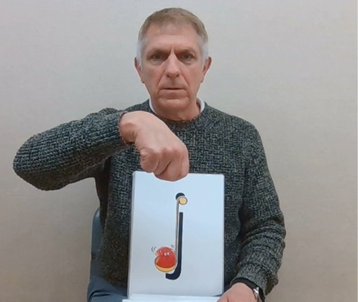

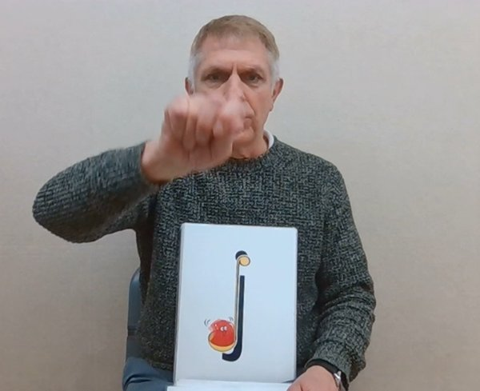

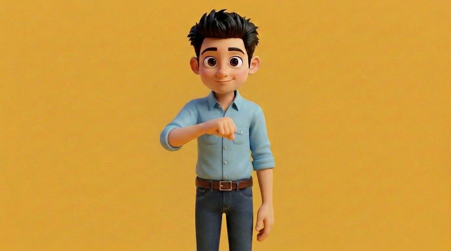

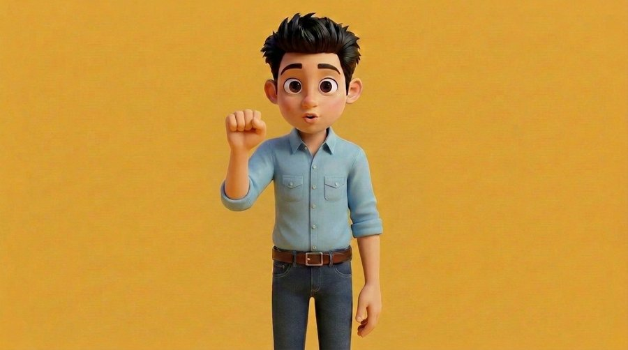

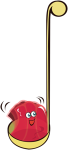
| 日時 | 北浦先生の指示（原文） | 直したこと |
|---|---|---|
| 22/10 18:32 📎 | ・j_1：はじめ ・j_2：/j/の時の動き（顔にかぶっているのでもう少し下に下げてください） ・レードルを持っているようなポーズなので、手の真下にJimmyを置いてください。 | v1 の素材: j_1・j_2 を左右反転。j_2 は顔にかぶるので少し下げる。Jimmy は手の真下 |
| 22/10 18:33 | 途中です。編集します。 | |
| 22/10 18:34 | 編集しました。 | |
| 22/10 18:35 | 動きとしては、グーの手が初めは下向き→/j/でて首をひねって握っている指を正面に向ける感じです。 | （グーは初め下向き → /j/ で手首をひねり、握った指を正面へ） |
| 22/10 18:36 | 反転してください。 | （左右反転で使う） |
| 22/10 18:36 | FAL を使っていいです。 | （生成を承認） |
| 22/10 19:05 | H・Iあたりから始めの動画のクオリティーが下がった気がします。 ・音質が違います。作り直してください。 ・グーが上向きになっています。下向き→正面です。 ・グーがふにゃふにゃと無駄な動きをしています。/j/の時に正面に向けるだけのシンプルな動きです。 | v2: 始めは手の甲が上・指が下。/j/ で1回だけ回して止める。声を +6→+4半音に |
| 22/10 19:17 | ・始め（指が下、手の甲が正面）→手の甲が正面ではなく、手の甲が上です。 ・費用は約.1とはどういうことでしょうか？ | （始めは手の甲が上） |
| 22/10 19:20 | OK | |
| 22/10 19:31 | とりあえず今の状態で一度見てみたいです。 | v2 を途中の版として提出 |
| 22/10 19:46 | ・初めの手の向きは良いです。ただ45度どころかほとんど回っていないのでやはり描きなおしの必要がありますね。 ・Jimmyの位置が下過ぎるので、もう少し手の位置を上げてほしいです。 ・顎と口が二重になっています。修正してください。 ・声がおかしいです。高い低いはこちらで確認するので毎回Aを基準に作ってください。 | v3: 始めと終わりの絵を描き直して手を上げる。顎の線まで同じ絵を貼り二重を防ぐ。声は A と同じ作り方 |
| 22/10 19:51 | OK | |
| 22/10 20:30 | ・手の動きが違います。初めは合っていますが、動かし方が横に90度ではなく、縦に90度ひねり、曲げている指先と手のひらが正面に向く感じです。 ・声質が違います。Aと同じ作り方でなぜ変わってしまうのでしょうか？以下のGの声ですよね？ https://ktblog.pages.dev/pros/deliverables/phonimaru-a-v2-boyvoice/ | （ひねりは横ではなく縦に90°） |
| 22/10 20:38 | ちなみに他のB～Hの音声はどれを変換していますか？ | （B〜H は基準音声 v1 → Liam seed7 → +4半音） |
| 22/10 20:49 | 発音がクリアーではないので、やはりB～Hと同じ作り方の方が安定する気がします。 | v4: 声を B〜H と同じ作り方に戻す |
| 22/10 21:09 | OK | v4: 縦に1回起き上がる終わりの絵＋H3（h3_j4_952）。Jimmy を約70px 上げる |
| 22/10 21:31 | 最後の形が全然違うのですが、静止画のj_2を見た上でその形になっているのでしょうか…？ | （v4 の終わりの形が j_2 と違う → 違い4点を報告） |
| 22/10 21:32 | 声もやはり他のアルファベットよりロボット感があります。 | |
| 22/10 21:35 | +4半音というのがおかしくしているのかもしれません。 | v4b: +0／+2半音の聞き比べ |
| 22/10 21:45 | ・カメラには手の甲と指の背が見え、親指は上、4本の指は下向き こちらは手の甲ではなく手のひらではないですか？ | （j_2 は手の甲ではなく手のひら。先生の言葉を正とする） |
| 22/10 21:52 | 音声ですが、やはりどちらも少し低いですね。+３半音くらいですかね？ | v4c: 声を +3半音に（映像は v4 と同じ） |
| 22/10 21:52 | OK | （手の作り直しを承認・約0.70ドル）→ 試作は顔の横のサムズアップになり不合格、未公開 |
| 22/10 21:53 | 今日はここまでで、続きは明日確認します。 |
生成の指示文（全文）
始めの絵（手の甲が上・v2）（fal-ai/nano-banana-pro/edit・{"image_urls": "（画像の URL）", "num_images": 2, "aspect_ratio": "16:9", "resolution": "1K", "output_format": "png"}）
Edit Image 1 only. Keep everything of Image 1 exactly: same 3D Pixar-like render style, same boy, face, eye size, hair, shirt with pocket, belt, jeans, yellow background, framing, size and position. Change only one arm and hand. Image 2 shows the exact hand pose to copy (already mirrored, use it as is, same side of the picture); copy nothing else from it. Pose: the forearm is held roughly horizontal in front of the stomach, and the hand is a closed fist gripping an invisible ladle handle that points straight down. The fist is turned DOWNWARD: the curled fingers and knuckles point down toward the floor, the back of the hand faces the camera, the thumb wraps over the top. We look at the back of the hand, not at the fingers. NOT a vertical thumb-up fist, NOT fingers facing the camera, NOT fingers facing up. The fist is at stomach height, well below the chin, not covering the face. The other arm hangs relaxed. Mouth closed, gentle smile. Normal child-size hand with natural fingers. No ladle, no objects, no text.
始めの絵（手を上げる・v3 以降）（fal-ai/nano-banana-pro/edit・{"image_urls": "（画像の URL）", "num_images": 2, "aspect_ratio": "16:9", "resolution": "1K", "output_format": "png"}）
Edit Image 1 only. Keep everything of Image 1 exactly: same 3D Pixar-like render style, same boy, face, eyes, mouth, hair, shirt with pocket, belt, jeans, yellow background, framing, camera, size and position of the body. Keep the hand pose and fist orientation exactly the same as in Image 1 (closed fist, back of the hand facing up toward the ceiling, curled fingers pointing down to the floor, as if holding a ladle handle pointing down). Change only ONE thing: raise this forearm and fist higher, so the fist is at upper chest height, about level with the shirt pocket, clearly higher than in Image 1 (move it up by about one fist height), still well below the chin and not covering the mouth or face. The elbow bends a little more to lift the forearm. The other arm stays relaxed exactly as it is. Mouth closed, gentle smile. Normal child-size hand with natural fingers. No objects, no text.
終わりの絵（縦に起こす・v4）（fal-ai/nano-banana-pro/edit・{"image_urls": "（画像の URL）", "num_images": 2, "aspect_ratio": "16:9", "resolution": "1K", "output_format": "png"}）
Edit Image 1 only. Keep everything of Image 1 exactly: same boy, face, eyes, hair, shirt, belt, jeans, yellow background, framing, camera, and the other relaxed arm. Keep the same upper arm, elbow and forearm, and keep the fist at the same place in front of the upper chest (it may rise a little, never above the chin). Change only the wrist and the mouth. 1) Wrist: in Image 1 the fist hangs down from the wrist: the back of the hand faces up and the curled fingers point down to the floor. Now the wrist bends UPWARD a quarter turn (90 degrees) in the vertical direction, flipping the fist up and toward the camera, like a hanging paw swinging up: the fist stands upright, and the inside of the fist faces the viewer: we clearly see the curled fingertips and the palm side of the fist straight toward the camera, the four bent fingers stacked toward us, the back of the hand now faces the boy's own chest and is not visible. The thumb stays on top. Do NOT rotate the hand sideways around the forearm; this is an up-down flip of the wrist only. Image 2 shows the target hand pose (copy only the hand pose, nothing else). 2) Mouth: saying the English sound /j/ as in 'jam': lips pushed forward and slightly rounded, teeth close together, mouth slightly open. No objects, no motion lines, no text. Natural child-size fingers, five fingers.
H3 縦の起き上がり（seed952・v4）（minimax H3（h3-max-turbo）・{"image_url": "（画像の URL）", "end_image_url": "（画像の URL）", "duration": 5, "resolution": "768P", "prompt_expansion_mode": "disabled", "seed": 952}）
A standing 3D animated cartoon boy in front of a plain warm yellow background. His forearm is held in front of his upper chest and his closed fist hangs down from the wrist: the back of the hand faces up and the curled fingers point down, as if holding a soup ladle handle. He holds completely still for a moment. Then ONE single smooth movement: the fist flips UP in the vertical direction a quarter turn, the forearm rising, so the curled fingertips and the palm side of the fist face straight toward the camera, and then it stays frozen in that position until the end. No sideways rolling, no wobbling, no shaking, no back-and-forth, no second movement, the fingers stay tightly closed. The head and body do not move. The other arm stays still. Eyes open looking at the camera, no blinking. Fixed camera, no zoom, no cut. No objects, no text.
声G（Liam seed7 → v4c は +3半音）（fal-ai/elevenlabs/voice-changer・{"audio_url": "（音声の URL）", "voice": "Liam", "remove_background_noise": false, "seed": 7, "output_format": "pcm_44100"}）